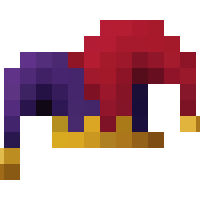
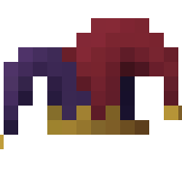

Quem pescou melhor este mês
O que o barco pesca sozinho enquanto você trabalha já conta. E quem aparece na hora do “!” soma mais.
No fim do mês, os três primeiros levam um chapéu celestial — o único jeito de ter um.
1ª edição · Chapéu de bobo da corte
Começa junto com o jogo na Steam
A data sai quando a página da loja abrir.
O prêmio
O mesmo chapéu, em três condições. Cada uma é uma peça diferente na Steam, com o seu próprio preço no Mercado.

Usado Chapéu de bobo da corteNovo
Chapéu de bobo da corteNovo
RasgadoCelestial não cai da cegonha nem sai de loja nenhuma. Se aparecer um no Mercado, alguém subiu nesse pódio.
O placar
| # | Pescador | Melhor lance | Pontos |
|---|---|---|---|
| O placar abre no primeiro dia da edição. Até lá, ninguém pescou nada — nem você. | |||
Atualiza de hora em hora.
Como se pontua
Todo peixe que entra no barco vale raridade × tamanho. Fisgado no clique, vale 50% a mais — a mesma regra do dinheiro. Peixe que escapou não conta.
| Raridade | Pontos |
|---|---|
| Comum | 2 |
| Incomum | 4 |
| Raro | 10 |
| Épico | 30 |
| Lendário | 80 |
| Celestial | 300 a 3.000 |
| Estrela | A partir de | Vezes |
|---|---|---|
| Bronze | — | ×1 |
| Prata | 45% | ×2 |
| Ouro | 80% | ×3 |
| Platina | 97% | ×5 |
| Mapa | Pontos |
|---|---|
| Rio Araguaia | 300 |
| Rio Negro | 500 |
| Lago de Furnas | 860 |
| Costa de Santa Catarina | 1.500 |
| Fernando de Noronha | 3.000 |
O celestial vale mais onde ele é mais difícil de aparecer. A porcentagem é o quanto do tamanho possível da espécie aquele peixe alcançou, a mesma régua das estrelas da Coleção.
Na prática
- Um raro de tamanho comum, pescado sozinho · 10 × 1 = 10
- O mesmo raro, fisgado no clique · 10 × 1 × 1,5 = 15
- Um lendário platina, pescado sozinho · 80 × 5 = 400
- O celestial do Araguaia, prata, no clique · 300 × 2 × 1,5 = 900
- O celestial de Noronha, platina, no clique · 3.000 × 5 × 1,5 = 22.500, o maior lance que existe
As regras
Valem os 10 melhores do dia
Cada dia conta os seus dez peixes de mais pontos, pescados sozinhos ou no clique, e o mês soma os dias. O teto segura quem deixa o computador ligado o mês inteiro.
O dia vira às 21h
À meia-noite UTC, que é 21h em Brasília. O mês segue o mesmo relógio, pra valer igual em qualquer país.
Empate
Com a mesma pontuação, fica na frente quem chegou nela primeiro.
Um celestial por edição
Cada mês vale um dos dois celestiais — o Chapéu de bobo da corte ou o Boi-bumbá. A primeira edição vale o Bobo.
Pra levar o chapéu
O prêmio vai direto pro seu inventário da Steam, sem código e sem formulário. Pra isso, o seu perfil da Steam precisa estar público quando a edição fechar.
Antes da entrega, o pódio é conferido. Pontuação que o jogo não consegue ter produzido não leva prêmio — e o placar inteiro fica publicado aqui, pra todo mundo ver.